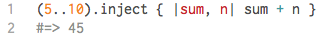
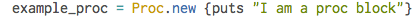
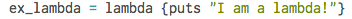

Blocks in Ruby refer to blocks of code. If you've written code before then you've already encountered code blocks. A block is just the code between the keywords |sum, n| sum + n part.

Although almost everything in Ruby is an object, blocks are not. They are part of the method that is called. In our example, the block |sum, n| sum + n is part of the inject method and not an individual object. (Methods are another exceptions in Ruby and are also not objects. )
Procs are objects that contain blocks and can be stored as variables or passed to methods as arguments. The syntax for creating a

A example_proc.call) the block is executed. Basically, this just means that you store a block as an object and this is what I mean by blocks being the "building blocks" of procs. Once you've made the block into an object through creating a proc, you then can store it in a variable, put it inside an array, send it as method arguments, or treat them as you would any other object.
NOTE: Besides being objects that can be passed around, procs also differ from methods in the way they treat arguments. Procs don't care whether they get the right number of arguments. If there is more than the required amount, it just takes what's needed and if there is not, the parameter gets set to
Lambdas are special types of procs. The syntax in creating one differs in that you create a lambda object by specifically explicitly creating it like so:

One way lambdas differ from procs is the way they treat the
Lastly, lambdas are pickier than procs and do care about the right number of arguments. Why do these differences matter? "The answer is in the conceptual differences between procedures and methods. Procs in Ruby are drop in code snippets, not methods. Because of this, the Proc return is the proc_return method’s return, and acts accordingly. Lambdas however act just like methods, as they check the number of arguments and do not override the calling methods return. For this reason, it is best to think of lambdas as another way to write methods, an anonymous way at that."–reactive.io
Blocks just refer to code blocks and is the code typically written between the keywords